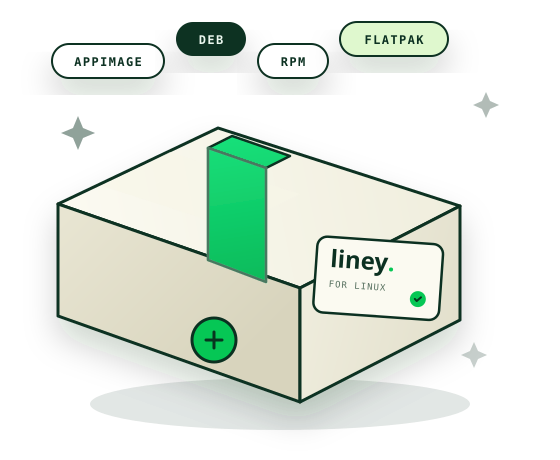

ข้อมูลอยู่กับเครื่องคุณ
แชต ประวัติ และมีเดียถูกแคชใน SQLite เปิดแอปแล้วเห็นทันที ไม่ต้องรอโหลดใหม่จากศูนย์ทุกครั้ง
SQLite · cache-first startupLINUX-FIRST · UNOFFICIAL CLIENT
เดสก์ท็อป LINE client ที่เก็บแชตไว้ในเครื่อง เปิดแล้วเห็นทันที รับข้อความผ่าน push เป็นหลัก และติดตั้งได้จริงบน Linux ที่คุณใช้อยู่
Liney เป็นเดสก์ท็อปแอปจริง ไม่ใช่เว็บห่อหน้าต่าง — และเลือกเส้นทางข้อมูลที่ทำให้แชตเปิดได้เร็วทุกครั้ง
แชต ประวัติ และมีเดียถูกแคชใน SQLite เปิดแอปแล้วเห็นทันที ไม่ต้องรอโหลดใหม่จากศูนย์ทุกครั้ง
SQLite · cache-first startupคีย์บอร์ด เมนูคลิกขวา ลากไฟล์ และหน้าต่างดูภาพแยก — ใช้เมาส์และคีย์บอร์ดได้เต็มที่เหมือนแอปอื่นบนเดสก์ท็อป
Electron · Reactรับข้อความผ่าน LINE push เป็นหลัก ถ้า transport สะดุดจะสลับไป polling ให้เอง โดยไม่ปล่อยให้แชตหยุดนิ่ง
PUSH · polling fallbackUI, engine และข้อมูลในเครื่องแยกจากกันชัดเจน ทำให้เปลี่ยนหรือซ่อมส่วนใดส่วนหนึ่งได้โดยไม่ลากทั้งแอปไปด้วย
เลือกแพ็กเกจที่ตรงกับระบบของคุณ ไฟล์ทุกตัวมาจาก GitHub Releases ที่ลงนามและตรวจสอบแล้ว ไม่ต้องติดตั้ง Node.js หรือ LINEJS เอง

ลองใช้ แชร์ความคิดเห็น และช่วยกันทำให้การแชตบน Linux ดีขึ้น
โปรเจกต์อิสระ เปิดซอร์สให้ตรวจสอบได้
Liney เป็นไคลเอนต์อิสระ ไม่เกี่ยวข้องกับหรือได้รับการรับรองจาก LY Corporation การใช้โปรโตคอลที่ไม่เป็นทางการอาจขัดกับข้อกำหนดของ LINE และมีความเสี่ยงต่อบัญชี
อ่าน Safety Notice ↗